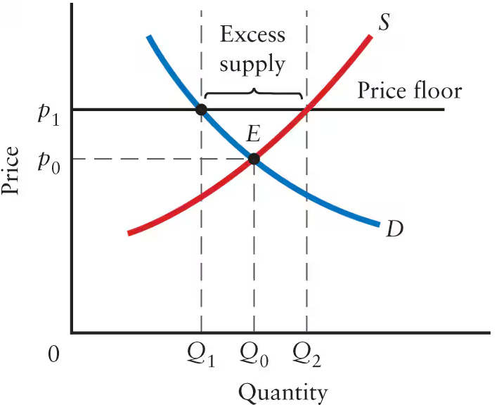
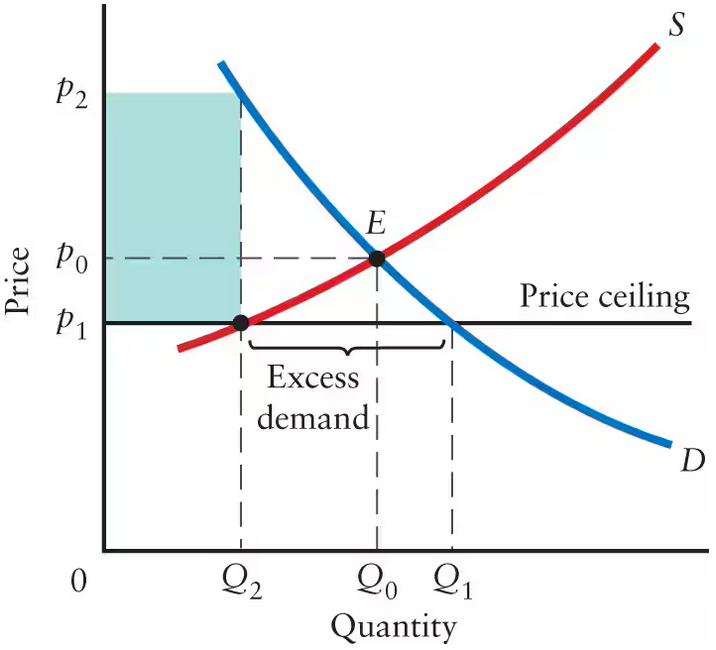
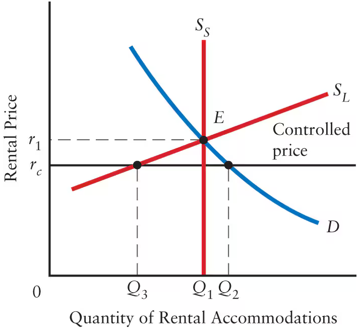
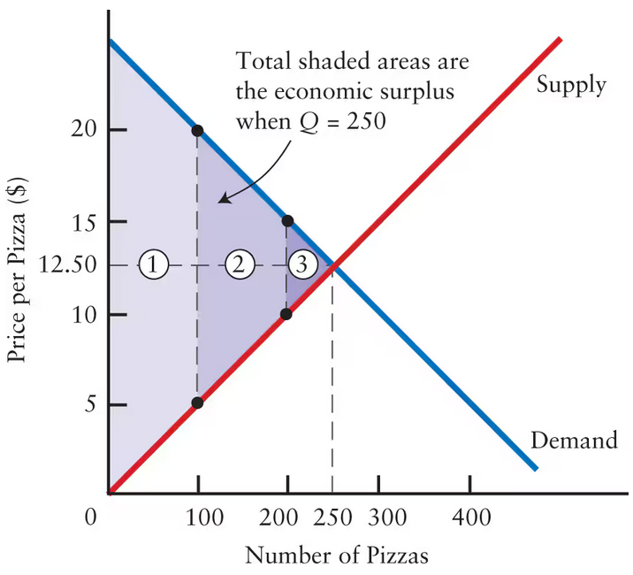
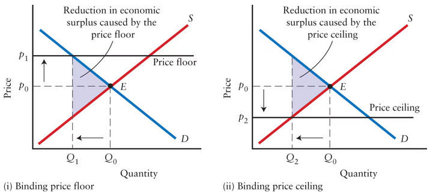
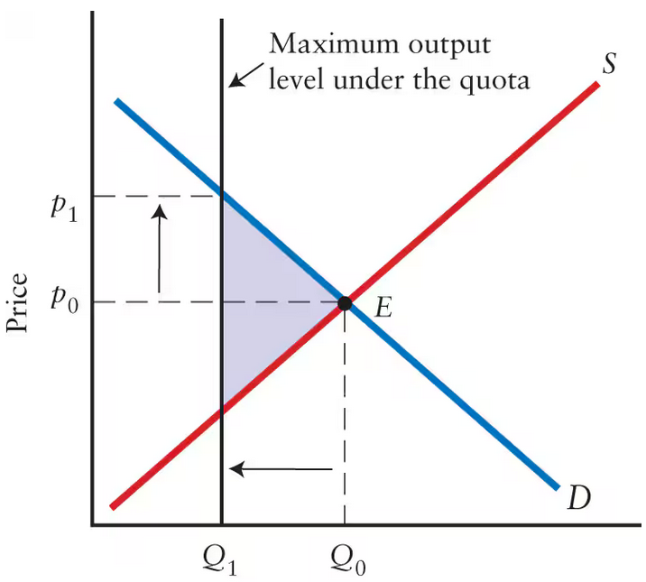

Chapter 5 Notes:
5.1
What are government controlled prices?
- Prices are decided by the equilibrium of the market (where demand and supply intersect). Therefore, a government controlled price is when the government forcibly sets the price of a product at a disequilibrium (which would normally mean there is either a surplus or unrealized profits from excess demand)
Price Floors
- If a price floor is set below or at the equilibrium, nothing happens. This is meaningless since the equilibrium is still within range.
- Howevr, if the price floor is above the equilibrium it is called a binding price floor. This leads to an excess supply. Either this unsold surplus just exists, or the government will enter the market and buy the excess supply. The excess supply is shown in the graph below: 
- Excess supply manifests itself in different ways. In the case of minimum wage, the excess supply is unemployment. In the case of milk, the excess supply is, well, milk.
Price Ceilings
- Price ceilings are just maximums for a price. If the price ceiling is above the equilibrium, much like with price floors, nothing happens, since the equilbrium is still in range
- If the price ceiling is below the equilibrium, then there is an excess of demand.
- This invites hidden markets, where the excess demand is met by selling the goods at the price the consumer would’ve paid without the price ceiling. This is represented in the graph below: 
What happens to the excess demand?
- Demand is met, just through alternative means.
- One of these methods could be first come, first serve. This is like in Soviet Russia, when people would have to wait on lines for hours due to price ceilings and shortages.
- This also sparks a market for scalpers. It can also spark sellers’ preferences, see here
- Rationing the product
- This is what we do during war time. You give out vouchers that can be redeemed, along with the payment for the product, to purchase something. These vouchers can be given out on any sort of criterion, such as age or financial status
- One of these methods could be first come, first serve. This is like in Soviet Russia, when people would have to wait on lines for hours due to price ceilings and shortages.
What’s a hidden market
- Libtard vocabulary for black market, which apparently is racist. See here
- A figure in which every single product is sold on the black market is shown here
- This is very unrealistic, since normally there are at least some law abiding citizens and at least some form of enforcment of the governments’ price ceiling
Why would a govenment enforce a price ceiling?
- to restrict production (such as during war time, to allocate the resources elsewhere)
- To keep specific prices down, like insulin
- To maintain equity in the consumption of a product that is temporarily in short supply (like with brownstone, which is probably dumb bready now that we’ve almost mined all of the brownstone supply in the world)
- Hidden markets take away from these goals. They give opportunity for people to buy shit at a higher price than the government sets, meaning that the already lower supply is even lower since some of the supply gets funneled into the black market
5.2
What is rent control?
- Rent control is a price ceiling on the price of rent.
What are the effects of rent control?
- Rent control causes a housing shortage. Much like all price floors, it means that there is naturally going to be excess demand that cannot be met.
- This can lead to seller’s preference, but for rent. Landlords might start renting on the basis of sex or race, which is illegal and super fucked up.
- Hidden markets will appear, such as a landlord charging a fee for bullshit that reflects the difference in value between the free market price and the controlled rent
- However, rent control has very different long term vs short term affects. This is because apartments are a uniquely durable product, meaning they provide a very long term service.
- In the short term, supply for housing is fairly inelastic, since it’s not like houses are going to start disappearing. Some might convert to condos, but the fast majority won’t.
- In the long run, however, supply is highly elastic. New construction will be halted, or massively slowed, since profits are much lower. Since the returns are too low, money will just go elsewhere.
- A graph representing this is shown below: 
People might chose to stay in a rent controlled apartment even if it is irrational, which negatively affects both perspective renters and current renters
Who wins and who loses?
- Existing Tenants: Those who are lucky enough to live in a rent controlled house will continuously benefit as the free market price rises, but their housing costs remain the same.
- Landlords: Landlords suffer because they do not realize as much profits as they could. This doesn’t really matter to landlords who are super rich, or large coporations like Blackrock, but to the modest landlord this could be devastating.
- Perspective Tenants: These people suffer from the existing housing shortage, and further suffer from the tenants who refuse to leave their rent controlled apartments.
5.3
What is market efficiency?
- Market efficiency is term used to decribe the hollisitic effects of economic policy, such as the ones shown above.
Different ways to interpret the Demand/Supply curves
- You can also view the demand curve as a function that takes in a quantity and tells you how much consumers are willing to pay for said amount. For instance, if the point (x,y) on the pizza demand curve is (200, 10$), meaning consumers are willing to pay 10 dollars for the 200th pizza.
- If the cost of producing a pizza is 10$, the lowest acceptable price for the 200th pizza is 10$.
- The profit these firms make is called the economic surplus. It can be seen in the graph below as the shaded region: 
- If the market isn’t at equilibrium, then economic surplus isn’t realized. If the price is past the equilibrium, then the cost of producing extra of a product exceeds the price consumers are willing to pay. Therefore, economic surplus actually declines.
- If the cost of producing a pizza is 10$, the lowest acceptable price for the 200th pizza is 10$.
How do price floors and ceilings affect economic surplus?
- Price floors and ceilings forcibly move the price of a product, concequently affecting the quantity supplied, causing a surplus in supply and demand, respectively. This ensures that there will be unrealized economic surplus, as seen as the shaded portion on the graphs below: 
- This causes a market inefficiency, since there is a reduction in economic surplus
Output quotas
- Much like price floors and ceilings, output quotas hinder the economic surplus of a market, making it inefficient. An example is shown below, where the quota is represented as a vertical line (as opposed to a ceiling or floor, which is horizontal. This is because it is a restriction on quantity and not price): 
Summary
Important Vocab
VOCAB Price Floor
- Definition: A minimum price set by the government
- Example: There is a price floor for milk so local dairy farmers can remain competitive and keep up with the massive infastructure of a company like Horizon. Another great example is minimum wage, which is a price floor on the cost of labor
- Related Vocab: A price floor is said to be binding if the floor is above the equilibrium. See here
VOCAB Price Ceiling
- Definition: A maximum price set by the government
- Example: Rent control or the price of certain vital medications
- Related Vocab: A price ceiling is said to be binding if the ceiling is below the equilibrium. See here
VOCAB Sellers’ Preferences
- Definition: When a seller keeps a product under the counter and only sells it to who he decides
- Example: Like when the plug got some new gas but only sells it to his mans
VOCAB Hidden Markets
- Definition: Black market; a market that violates legal price control
- Example: The black market for prescription medication
VOCAB Output Quota
- Definition: A minimum or maximum value that a supplier is forced to adhere to. See here for a more detailed explantion
- Example: There is a quota on the number of taxi drivers a company is allowed to deploy, so the streets aren’t full of taxi drivers. However, this leads to unrealized economic surplus